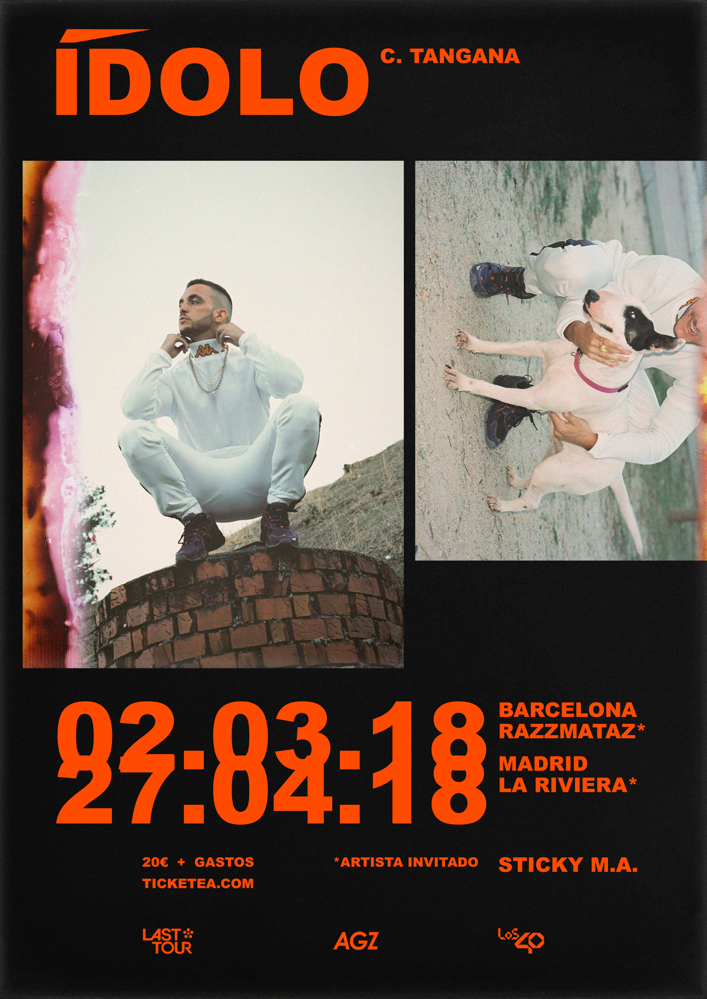

¿Quien es C.Tangana?
Antón Álvarez Alfaro, más conocido como C. Tangana (también como Pucho o como Crema hasta 2011 y como Caballo Ganador en 2017) es un músico nacido en 1990 en Madrid.1 Es miembro del grupo Agorazein junto con Sticky M.A. (antes conocido como Manto), Jerv.Agz., Fabianni e I-Ace. Comenzó su carrera musical en 2006, bajo el pseudónimo de Crema,2 con una maqueta llamada Elescrema.
Algunos exitos:
- C. Tangana - Mala Mujer (2017)
- C. Tangana - Tiempo (2017)
- C. Tangana - No te pegas (2018)
- C. Tangana - Still Rapping (2018)
Próxima gira
| Fecha | Ciudad | Lugar |
|---|---|---|
| 30 Enero | Donosti | Lurrazpiko Festa |
| 6 Febrero | Torrelavega | La Casa Encantada |
| 13 Febrero | Madrid | Sala Caracol |
| 27 Febrero | Gijón | New Tom Corless |
| 4 Marzo | Salamanca | Potemkin |
| 5 Marzo | Valladolid | Asklepios |
| 18 Marzo | Zaragoza | Sala López |
| 19 Marzo | Barcelona | Razzmatazz 3 |
| 24 Marzo | Alicante | Sala Stereo |
| 25 Marzo | Murcia | Sala REM |
| 26 Marzo | Valencia | Agenda Club |
| 1 Abril | A Coruña | LeClub |
| 2 Abril | Vigo | Sala Masterclub |
| 8 Abril | Málaga | Sala Velvet |